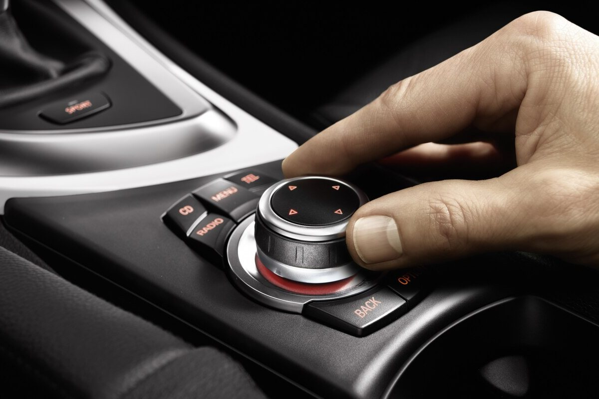
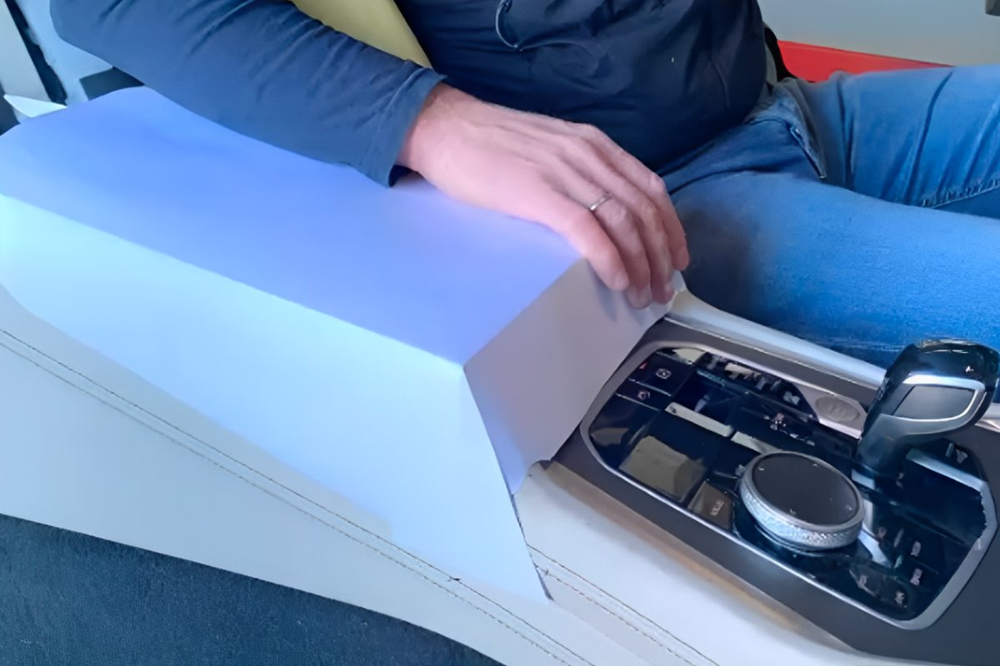
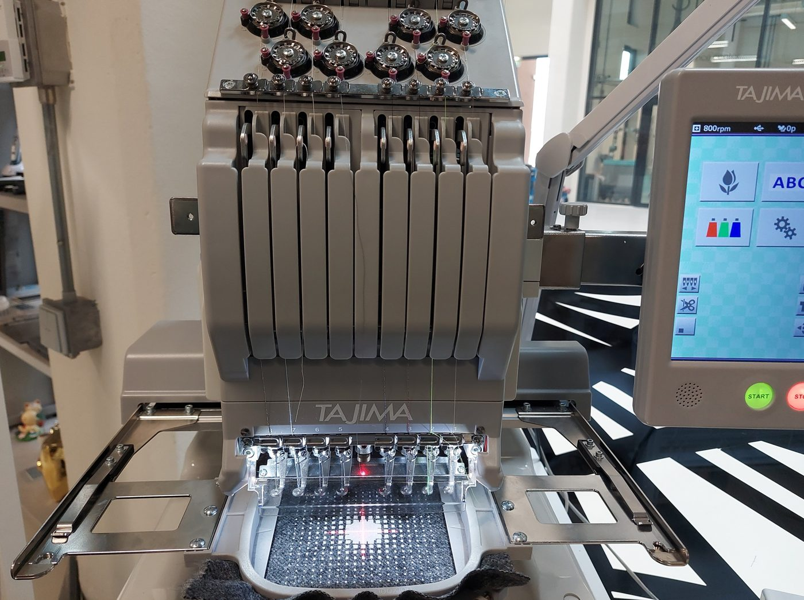
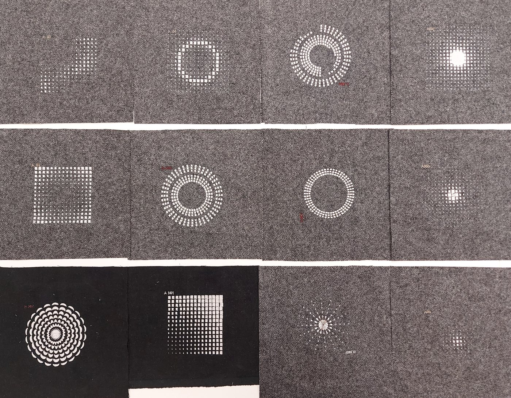
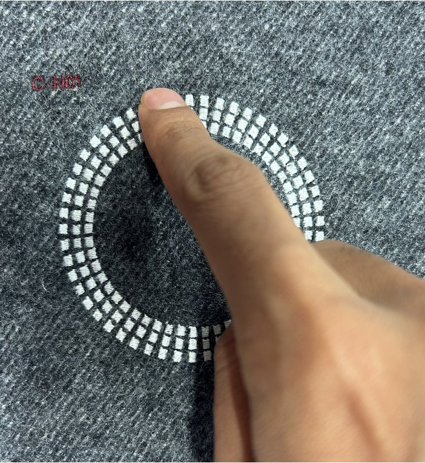
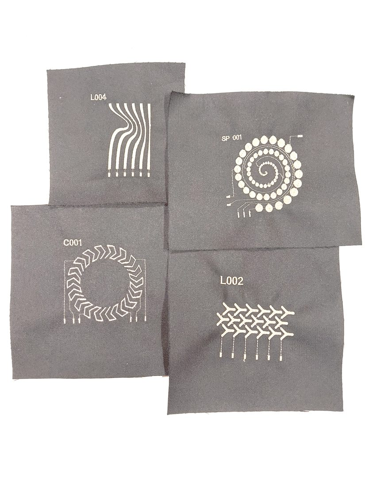
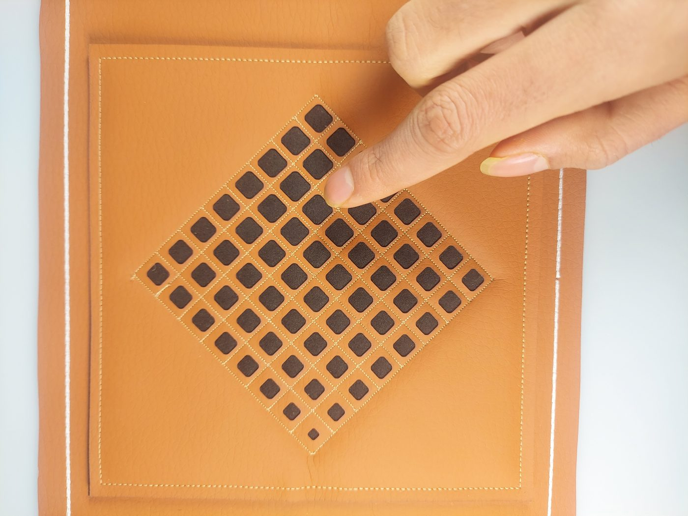
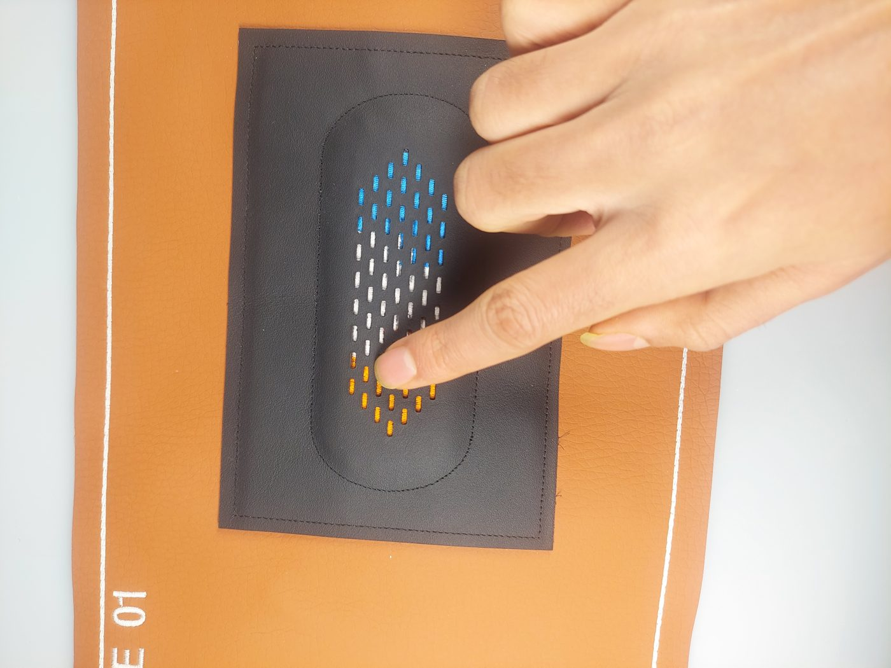
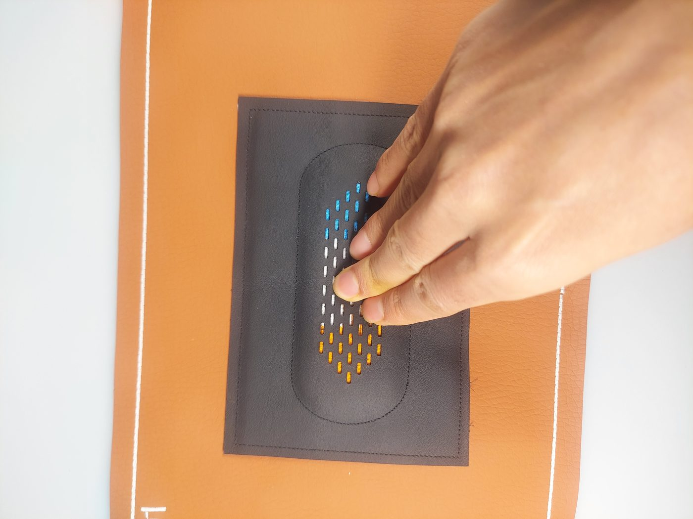

Completed project · Doctoral research
Textile Interfaces for Automotive Interiors
What if the central console — where the driver’s arm already rests — became a soft, three-dimensional, touch-sensitive surface? This project moved from the console’s form, to the textile surface that covers it, to the sensing embedded into it.

01
Why
Touchscreens are convenient, but in a moving car they ask the driver to reach over to the interface — which can cause unintended inputs or jitter from hand movement, and pulls attention away from driving.
Today’s central console is crowded with buttons, dials and knobs for non-driving activities such as entertainment and climate. The idea was to replace them with interaction on a three-dimensional surface right where the arm is resting.


02
Form: gestures on a 3D console
How would people actually interact with a three-dimensional console surface? A guessability-style gesture elicitation study (12 participants) asked them to propose gestures for in-car tasks — navigation, a 2D menu, a radial menu and seat adjustment.
Participants used swipes, taps and double taps, presses, rotations and combined gestures across the console’s surfaces. There was strong consensus for pan, scroll and select, and more varied gestures for seat adjustment and radial scrolling — so the console should match 3D gestures to tasks and recognize multiple gestures.
03
Surface: textiles that guide touch
A soft console needs a cover — and the cover itself can tell people how to interact. Two design objectives guided the textile surface: visual features (patterns and textures) should convey the intended interaction, and tactile features should reinforce those visual cues on touch.
Prototypes were made on a commercial embroidery machine. Non-functional samples, embroidered with regular yarns, were used to study how people interact with the embroidered features and to explore a geometry-driven design space of patterns and textures.



04
Sensing: conductive embroidery
Functional prototypes replaced regular yarn with conductive yarn, turning embroidered patterns into capacitive touch zones — and revealed the constraints of the embroidery process.
For continuous sliding detection, each conductive feature should be narrower than an average fingertip, with the gap between features kept minimal and smaller than the feature itself — while staying above the machine’s resolution (about 2 mm). Connections are a design problem too: long, closely spaced or crossing paths (for example in concentric shapes) either disturb the aesthetics or need an extra textile layer.

The final design had to meet both sides: affordance- and aesthetics-led exploration, and sensing-led prototyping — with each feature matching the function it stands for.
05
A functional, sensitive textile interface
Visual and textural features were explored on textile samples tailored to automotive interfaces, then brought together into functional, touch-sensitive textile controls — such as a seat-control interface whose embroidered shape mirrors the seat it adjusts.



06
Over 3D forms
The last step wrapped the textile over the console itself — designing visual and tactile features on the 3D surface to guide gestures, and exploring gesture recognition with textile-based resistive sensing, towards a fully interactive 3D console.
07
Publications
- 2024Interaction with a 3D Surface for an Innovative Input Experience on a Central ConsoleR. Bhaumik, K. F. Mwaita, F. Solaroli, A. Ahmed, A. De Angeli, M. Haller · ACM AutomotiveUI
- 2026Affordances of Soft Interfaces: A Design and Fabrication ApproachR. Bhaumik · Doctoral thesis, Free University of Bozen-Bolzano